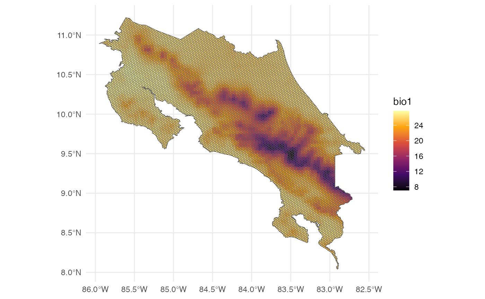
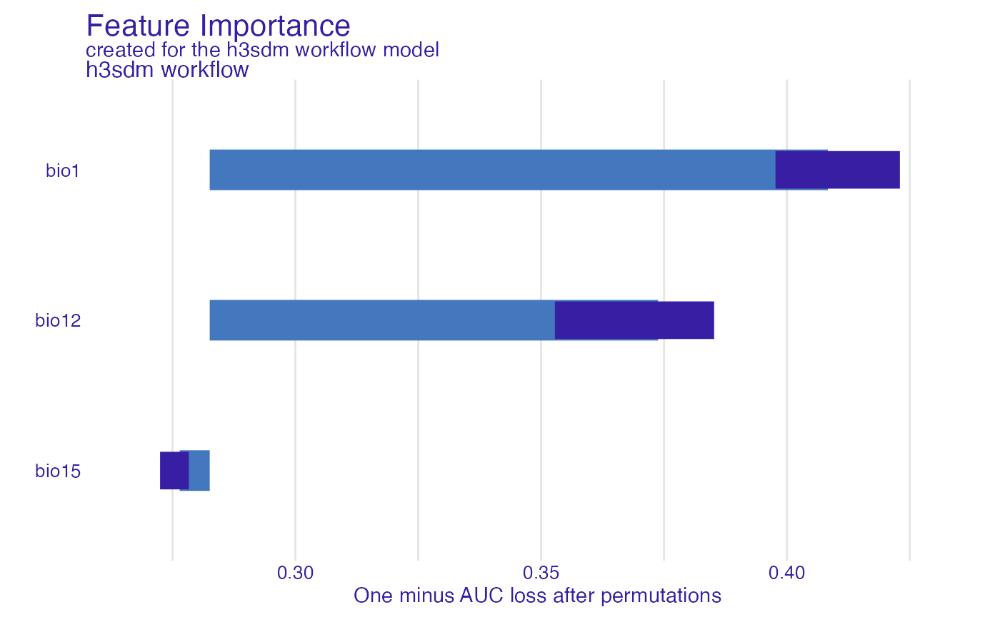
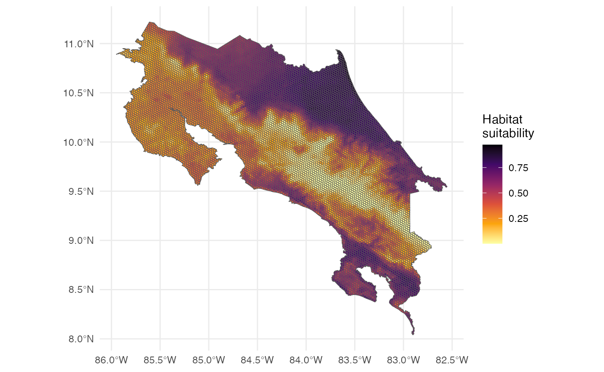
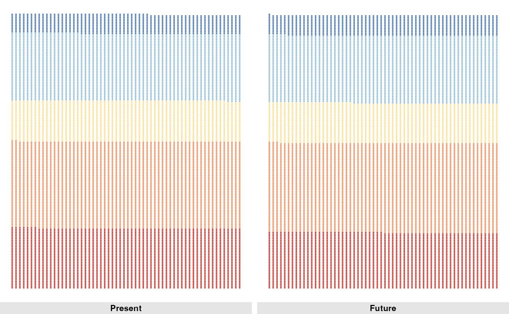

Introduction
This tutorial demonstrates a complete workflow for species distribution modeling (SDM) for a single species using h3sdm and related packages. We cover data preparation, model fitting, spatial cross-validation, prediction, and feature importance analysis.
Note: The h3sdm package depends on the paisaje package for data access and processing functions. paisaje is not available on CRAN, so it must be installed from GitHub using:
install.packages("remotes")
remotes::install_github("ManuelSpinola/paisaje")
# Load the required packages
library(h3sdm)
library(paisaje)
library(tidyverse)
library(here)
library(tidymodels)
library(spatialsample)
library(sf)
library(terra)
library(tidyterra)
library(DALEX)
library(DALEXtra)
library(ingredients)
library(exactextractr)
library(workflowsets)
library(themis)
library(ggbrick)
# Optional packages for advanced modeling or visualization:
if (requireNamespace("ranger", quietly = TRUE)) library(ranger)
if (requireNamespace("xgboost", quietly = TRUE)) library(xgboost)1. Define the Area of Interest
We start by defining the geographical area for modeling. Here we use Costa Rica as an example. The file is includesd in the ‘h3sdm’ package.
cr <- cr_outline_c2. Load Environmental Predictors
We use WorldClim historic bioclimatic variables for Costa Rica as environmental predictors. The data is included in the ‘h3sdm’ package.
bio <- terra::rast(system.file("extdata", "bioclim_current.tif", package = "h3sdm"))3. Load Species Occurrence Data
Here we obtain presence–absence data for the species of interest (Silverstoneia flotator). We use the h3sdm_pa function to generate both presence and pseudo-absence records. A limit of 10,000 records is set to ensure that all presence records are retrieved, and 300 pseudo-absences are generated.
There are different methods for generating pseudo-absences; here, we rely on random sampling. Since there are approximately 100 positive hexagons at resolution 7, we request three times that number (i.e., 300) of pseudo-absences. At this resolution, H3 hexagons are about 5.16 ha in size. These parameters can be adjusted depending on your specific needs and the characteristics of the species being modeled.
records <- h3sdm_pa("Silverstoneia flotator", cr, res = 7, limit = 10000, n_pseudoabs = 300)
head(records)
#> Simple feature collection with 6 features and 2 fields
#> Geometry type: MULTIPOLYGON
#> Dimension: XY
#> Bounding box: xmin: -84.06344 ymin: 8.486587 xmax: -82.77295 ymax: 9.643344
#> Geodetic CRS: WGS 84
#> h3_address presence geometry
#> 43 8766b4415ffffff 1 MULTIPOLYGON (((-84.05549 9...
#> 165 87679b636ffffff 1 MULTIPOLYGON (((-82.79149 9...
#> 198 8766b54d3ffffff 1 MULTIPOLYGON (((-83.18895 8...
#> 427 87679b78effffff 1 MULTIPOLYGON (((-82.85228 9...
#> 796 8766b0135ffffff 1 MULTIPOLYGON (((-83.71366 8...
#> 893 8766b014cffffff 1 MULTIPOLYGON (((-83.53362 8...
table(records$presence)
#>
#> 0 1
#> 300 1144. Prepare Predictors
Prepare environmental predictors by extracting values for each hexagon in the study area.
h7 <- h3sdm_get_grid(cr, res = 7)
bio_predictors <- h3sdm_extract_num(bio, h7)
#> | | | 0% | | | 1% | |= | 1% | |= | 2% | |== | 2% | |== | 3% | |== | 4% | |=== | 4% | |=== | 5% | |=== | 6% | |==== | 6% | |==== | 7% | |===== | 7% | |===== | 8% | |===== | 9% | |====== | 9% | |====== | 10% | |====== | 11% | |======= | 11% | |======= | 12% | |======== | 12% | |======== | 13% | |======== | 14% | |========= | 14% | |========= | 15% | |========= | 16% | |========== | 16% | |========== | 17% | |=========== | 17% | |=========== | 18% | |=========== | 19% | |============ | 19% | |============ | 20% | |============= | 20% | |============= | 21% | |============= | 22% | |============== | 22% | |============== | 23% | |============== | 24% | |=============== | 24% | |=============== | 25% | |================ | 25% | |================ | 26% | |================ | 27% | |================= | 27% | |================= | 28% | |================= | 29% | |================== | 29% | |================== | 30% | |=================== | 30% | |=================== | 31% | |=================== | 32% | |==================== | 32% | |==================== | 33% | |==================== | 34% | |===================== | 34% | |===================== | 35% | |====================== | 35% | |====================== | 36% | |====================== | 37% | |======================= | 37% | |======================= | 38% | |======================= | 39% | |======================== | 39% | |======================== | 40% | |========================= | 40% | |========================= | 41% | |========================= | 42% | |========================== | 42% | |========================== | 43% | |=========================== | 43% | |=========================== | 44% | |=========================== | 45% | |============================ | 45% | |============================ | 46% | |============================ | 47% | |============================= | 47% | |============================= | 48% | |============================== | 48% | |============================== | 49% | |============================== | 50% | |=============================== | 50% | |=============================== | 51% | |=============================== | 52% | |================================ | 52% | |================================ | 53% | |================================= | 53% | |================================= | 54% | |================================= | 55% | |================================== | 55% | |================================== | 56% | |================================== | 57% | |=================================== | 57% | |=================================== | 58% | |==================================== | 58% | |==================================== | 59% | |==================================== | 60% | |===================================== | 60% | |===================================== | 61% | |====================================== | 61% | |====================================== | 62% | |====================================== | 63% | |======================================= | 63% | |======================================= | 64% | |======================================= | 65% | |======================================== | 65% | |======================================== | 66% | |========================================= | 66% | |========================================= | 67% | |========================================= | 68% | |========================================== | 68% | |========================================== | 69% | |========================================== | 70% | |=========================================== | 70% | |=========================================== | 71% | |============================================ | 71% | |============================================ | 72% | |============================================ | 73% | |============================================= | 73% | |============================================= | 74% | |============================================= | 75% | |============================================== | 75% | |============================================== | 76% | |=============================================== | 76% | |=============================================== | 77% | |=============================================== | 78% | |================================================ | 78% | |================================================ | 79% | |================================================ | 80% | |================================================= | 80% | |================================================= | 81% | |================================================== | 81% | |================================================== | 82% | |================================================== | 83% | |=================================================== | 83% | |=================================================== | 84% | |==================================================== | 84% | |==================================================== | 85% | |==================================================== | 86% | |===================================================== | 86% | |===================================================== | 87% | |===================================================== | 88% | |====================================================== | 88% | |====================================================== | 89% | |======================================================= | 89% | |======================================================= | 90% | |======================================================= | 91% | |======================================================== | 91% | |======================================================== | 92% | |======================================================== | 93% | |========================================================= | 93% | |========================================================= | 94% | |========================================================== | 94% | |========================================================== | 95% | |========================================================== | 96% | |=========================================================== | 96% | |=========================================================== | 97% | |=========================================================== | 98% | |============================================================ | 98% | |============================================================ | 99% | |=============================================================| 99% | |=============================================================| 100%
predictors <- h3sdm_predictors(bio_predictors)In this case we select bio1 (Annual Mean Temperature), bio12 (Annual Precipitation), and bio15 (Precipitation Seasonality).
predictors <- predictors |>
dplyr::select(h3_address, bio1, bio12, bio15, geometry)We can visualize one of the predictors, for example Bio1.

5. Combine Records and Predictors
Merge species occurrence records with environmental predictors.
dat <- h3sdm_data(records, predictors)6. Spatial Cross-Validation
Define spatial blocks for cross-validation to account for spatial autocorrelation.
scv <- h3sdm_spatial_cv(dat, v = 5, repeats = 1)Plot the spatial blocks.
7. Define Recipe and Model
Create a modeling recipe and specify the classification model. We start with presence–absence data aggregated in hexagonal cells. From the initial data, we obtained roughly 100 hexagons with presence (presence = 1). For pseudo-absences, we sampled about three times more absence hexagons (presence = 0) to ensure sufficient coverage.
This results in an imbalanced dataset, which can bias the model toward predicting absences. To correct for this, we use step_downsample(presence) from the themis package.
receta <- h3sdm_recipe(dat) |>
themis::step_downsample(presence)Key points:
Only the majority class (pseudo-absence hexagons) is reduced.
The minority class (presence hexagons) remains unchanged.
After down-sampling, the dataset is balanced, improving model training and evaluation.
In our case, down-sampling ensures that the 100 presence hexagons and a comparable number of pseudo-absence hexagons are used for modeling, preventing bias toward absences while retaining the full presence information.
Now we define a logistic regression model using the
parsnip package, from the tidymodels framework.
modelo <- parsnip::logistic_reg() %>%
parsnip::set_engine("glm") %>%
parsnip::set_mode("classification")8. Create Workflow
Create a workflow combining the recipe and model.
wf <- h3sdm_workflow(modelo, receta)9. Fit the Model
Before fitting the model, we need to extract the presence data from the dataset. This ensures that metrics, cross-validation, and evaluation focus correctly on the locations where the species is actually present.
Next, we fit the model using the spatial cross-validation scheme. Spatial CV accounts for spatial autocorrelation by partitioning the data into spatially distinct folds, providing a more realistic assessment of model performance compared to random CV.
f <- h3sdm_fit_model(wf, scv, presence_data)Key points:
presence_data contains all hexagons with presence = 1.
The cross-validation folds are spatially blocked to reduce leakage between training and test data.
The model is trained and validated using these folds, ensuring robust performance evaluation.
10. Evaluate Model Performance
After fitting the model, assess its performance using cross-validated metrics such as ROC-AUC, accuracy, TSS, and the Boyce index. The h3sdm_eval_metrics() function computes these metrics based on the fitted model and the presence data, providing a quantitative measure of how well the model distinguishes presence from absence across spatial folds.
evaluation_metrics <- h3sdm_eval_metrics(
fitted_model = f$cv_model,
presence_data = presence_data
)
evaluation_metrics
#> # A tibble: 8 × 6
#> .metric .estimator mean std_err conf_low conf_high
#> <chr> <chr> <dbl> <dbl> <dbl> <dbl>
#> 1 accuracy binary 0.673 0.0489 0.577 0.768
#> 2 f_meas binary 0.743 0.0420 0.660 0.825
#> 3 kap binary 0.292 0.101 0.0934 0.490
#> 4 roc_auc binary 0.685 0.0734 0.541 0.828
#> 5 sens binary 0.650 0.0601 0.532 0.768
#> 6 spec binary 0.696 0.121 0.459 0.933
#> 7 tss binary 0.478 NA NA NA
#> 8 boyce binary 0.666 NA NA NAKey points:
Metrics are computed using spatial cross-validation, so results reflect realistic predictive performance.
ROC-AUC evaluates discrimination ability; TSS balances sensitivity and specificity.
The Boyce index evaluates how well predicted suitability matches observed presences, which is particularly useful for presence-only or pseudo-absence data.
These metrics help identify whether the model reliably predicts species occurrence.
We can visualize the metrics.
ggplot(evaluation_metrics, aes(.metric, mean)) +
theme_minimal() +
geom_col(width = 0.03, color = "dodgerblue3", fill = "dodgerblue3") +
geom_point(size = 3, color = "orange") +
ylim(0,1)11. Make Predictions
Generate spatial predictions for the species distribution across the study area.
p <- h3sdm_predict(f, predictors)12. Map
Now we can visualize the predictions in a map.
The map represents habitat suitability for the species across the hexagons. The values (usually between 0 and 1 for a logistic model) indicate the habitat suitability of each hexagon for the species.
Interpretation of the prediction values:
- Higher values → more suitable habitat
- Lower values → less suitable habitat
13. Model Interpretation: Feature Importance & Partial Dependence
Finallly, we interpret the model to understand which predictors are most influential and how they affect predictions.
First we create an explainer object using the DALEX package.
e <- h3sdm_explain(f$final_model, data = dat)
#> Preparation of a new explainer is initiated
#> -> model label : h3sdm workflow
#> -> data : 414 rows 6 cols
#> -> target variable : 414 values
#> -> predict function : custom_predict
#> -> predicted values : No value for predict function target column. ( default )
#> -> model_info : package tidymodels , ver. 1.4.1 , task classification ( default )
#> -> predicted values : numerical, min = 0.001604346 , mean = 0.4662787 , max = 0.8956116
#> -> residual function : difference between y and yhat ( default )
#> -> residuals : numerical, min = -0.8956116 , mean = -0.1909164 , max = 0.8797704
#> A new explainer has been created!Feature Importance
We evaluate the importance of each predictor variable using permutation importance. This method assesses how much the model’s performance decreases when the values of a predictor are randomly shuffled, indicating its contribution to the model.
We need to specify the predictor variables to evaluate, excluding non-predictor columns.
Now we compute variable importance.
var_imp <- model_parts(
explainer = e,
variables = predictors_to_evaluate
)We can visualize the variable importance.
plot(var_imp)
Partial Dependence Plots
We create partial dependence plots (PDPs) to visualize the relationship between key predictors and the predicted habitat suitability. PDPs show how the predicted outcome changes as a single predictor varies, while averaging out the effects of other predictors.
pdp_glm <- partial_dependence(e, variables = c("bio12", "bio1", "bio15"))Now we can plot the PDPs.
plot(pdp_glm)All predictors show a positive relationship with habitat suitability, but Bio12 (annual precipitation) and Bio1 (mean annual temperature) stand out with higher importance and stronger positive effects. In contrast, Bio15 (precipitation seasonality) has a weaker positive effect, suggesting that while areas with variable rainfall are somewhat suitable, they are less influential than Bio12 or Bio1.
14. Categorize Habitat Suitability
We can categorize the continuous habitat suitability predictions into discrete classes for easier interpretation. Here we define five categories: “Very low”, “Low”, “Medium”, “High”, and “Very high”.
p <- p %>%
mutate(
habitat_cat = cut(
prediction,
breaks = c(0, 0.2, 0.4, 0.6, 0.8, 1),
labels = c("Very low", "Low", "Medium", "High", "Very high"),
include.lowest = TRUE
)
)Now we can visualize the categorized habitat suitability in a map.
ggplot() +
theme_minimal() +
geom_sf(data = p, aes(fill = habitat_cat)) +
scale_fill_viridis_d(name = "Habitat \ncategory", option = "B", direction = -1, na.translate = FALSE)We can also count the number of hexagons in each habitat suitability category.
counts_current <- p |>
st_drop_geometry() |>
count(habitat_cat) |>
drop_na() |>
mutate(scenario = "Present")
counts_current
#> habitat_cat n scenario
#> 1 Very low 2287 Present
#> 2 Low 3295 Present
#> 3 Medium 1554 Present
#> 4 High 2542 Present
#> 5 Very high 738 PresentNow we can create a waffle plot to visualize the distribution of habitat suitability categories.
15. Make predictios for a future scenario
We can also make predictions for future climate scenarios. Here we use WorldClim future bioclimatic variables for Costa Rica as environmental predictors. The data is included in the ‘h3sdm’ package. Only three variables are included: Bio1 (Annual Mean Temperature), Bio12 (Annual Precipitation), and Bio15 (Precipitation Seasonality).
bio_future <- terra::rast(system.file("extdata", "bioclim_future.tif", package = "h3sdm"))Rename the layers of the raster to match the names used in the model.
We prepare the future predictors by extracting values for each hexagon in the study area.
bio_future_predictors <- h3sdm_extract_num(bio_future, h7)
#> | | | 0% | | | 1% | |= | 1% | |= | 2% | |== | 2% | |== | 3% | |== | 4% | |=== | 4% | |=== | 5% | |=== | 6% | |==== | 6% | |==== | 7% | |===== | 7% | |===== | 8% | |===== | 9% | |====== | 9% | |====== | 10% | |====== | 11% | |======= | 11% | |======= | 12% | |======== | 12% | |======== | 13% | |======== | 14% | |========= | 14% | |========= | 15% | |========= | 16% | |========== | 16% | |========== | 17% | |=========== | 17% | |=========== | 18% | |=========== | 19% | |============ | 19% | |============ | 20% | |============= | 20% | |============= | 21% | |============= | 22% | |============== | 22% | |============== | 23% | |============== | 24% | |=============== | 24% | |=============== | 25% | |================ | 25% | |================ | 26% | |================ | 27% | |================= | 27% | |================= | 28% | |================= | 29% | |================== | 29% | |================== | 30% | |=================== | 30% | |=================== | 31% | |=================== | 32% | |==================== | 32% | |==================== | 33% | |==================== | 34% | |===================== | 34% | |===================== | 35% | |====================== | 35% | |====================== | 36% | |====================== | 37% | |======================= | 37% | |======================= | 38% | |======================= | 39% | |======================== | 39% | |======================== | 40% | |========================= | 40% | |========================= | 41% | |========================= | 42% | |========================== | 42% | |========================== | 43% | |=========================== | 43% | |=========================== | 44% | |=========================== | 45% | |============================ | 45% | |============================ | 46% | |============================ | 47% | |============================= | 47% | |============================= | 48% | |============================== | 48% | |============================== | 49% | |============================== | 50% | |=============================== | 50% | |=============================== | 51% | |=============================== | 52% | |================================ | 52% | |================================ | 53% | |================================= | 53% | |================================= | 54% | |================================= | 55% | |================================== | 55% | |================================== | 56% | |================================== | 57% | |=================================== | 57% | |=================================== | 58% | |==================================== | 58% | |==================================== | 59% | |==================================== | 60% | |===================================== | 60% | |===================================== | 61% | |====================================== | 61% | |====================================== | 62% | |====================================== | 63% | |======================================= | 63% | |======================================= | 64% | |======================================= | 65% | |======================================== | 65% | |======================================== | 66% | |========================================= | 66% | |========================================= | 67% | |========================================= | 68% | |========================================== | 68% | |========================================== | 69% | |========================================== | 70% | |=========================================== | 70% | |=========================================== | 71% | |============================================ | 71% | |============================================ | 72% | |============================================ | 73% | |============================================= | 73% | |============================================= | 74% | |============================================= | 75% | |============================================== | 75% | |============================================== | 76% | |=============================================== | 76% | |=============================================== | 77% | |=============================================== | 78% | |================================================ | 78% | |================================================ | 79% | |================================================ | 80% | |================================================= | 80% | |================================================= | 81% | |================================================== | 81% | |================================================== | 82% | |================================================== | 83% | |=================================================== | 83% | |=================================================== | 84% | |==================================================== | 84% | |==================================================== | 85% | |==================================================== | 86% | |===================================================== | 86% | |===================================================== | 87% | |===================================================== | 88% | |====================================================== | 88% | |====================================================== | 89% | |======================================================= | 89% | |======================================================= | 90% | |======================================================= | 91% | |======================================================== | 91% | |======================================================== | 92% | |======================================================== | 93% | |========================================================= | 93% | |========================================================= | 94% | |========================================================== | 94% | |========================================================== | 95% | |========================================================== | 96% | |=========================================================== | 96% | |=========================================================== | 97% | |=========================================================== | 98% | |============================================================ | 98% | |============================================================ | 99% | |=============================================================| 99% | |=============================================================| 100%
predictors_future <- h3sdm_predictors(bio_future_predictors)Now we can make predictions for the future scenario.
p_future <- h3sdm_predict(f, predictors_future)We can visualize the future predictions in a map.

We can categorize the continuous habitat suitability predictions into discrete classes for easier interpretation. Here we define five categories: “Very low”, “Low”, “Medium”, “High”, and “Very high”.
p_future <- p_future %>%
mutate(
habitat_cat = cut(
prediction,
breaks = c(0, 0.2, 0.4, 0.6, 0.8, 1),
labels = c("Very low", "Low", "Medium", "High", "Very high"),
include.lowest = TRUE
)
)Now we can visualize the categorized habitat suitability in a map.
ggplot() +
theme_minimal() +
geom_sf(data = p_future, aes(fill = habitat_cat)) +
scale_fill_viridis_d(name = "Habitat \ncategory", option = "B", direction = -1, na.translate = FALSE)We can also count the number of hexagons in each habitat suitability category.
counts_future <- p_future |>
st_drop_geometry() |>
count(habitat_cat) |>
drop_na() |>
mutate(scenario = "Future")
counts_future
#> habitat_cat n scenario
#> 1 Very low 2130 Future
#> 2 Low 3393 Future
#> 3 Medium 1519 Future
#> 4 High 2563 Future
#> 5 Very high 776 FutureNow we can create a waffle plot to visualize the distribution of habitat suitability categories for the future scenario.
Now we can create a waffle plot to visualize the distribution of habitat suitability categories for both present and future scenarios.

16. Conclusions
This tutorial demonstrated a complete SDM workflow for a single model
using the h3sdm package. The key steps included:
Defining the study area
Loading and preparing environmental predictors
Fetching species occurrence data
Building a predictive model with spatial cross-validation
Evaluating performance and making predictions
Assessing variable importance
Categorizing habitat suitability
Making predictions for future climate scenarios
Comparing habitat suitability between present and future scenarios
This workflow demonstrates modeling for a single species using one model. It can be easily adapted to handle multiple species or more complex modeling scenarios, as illustrated in the Articles section.